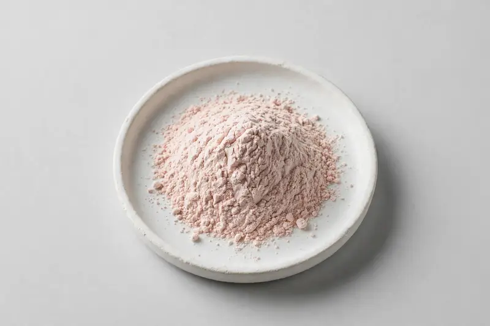

Spray-dried watermelon fruit powder positioned around lycopene and L-citrulline for hydration and beverage concepts.

Overview
Watermelon extract is a spray-dried fruit powder from Citrullus lanatus, positioned around lycopene and L-citrulline as its characteristic constituents. Interest is growing among beverage brands building hydration-style and fruit-forward drink concepts where a soluble, shelf-stable powder is more practical than fresh juice. Our role as a Xi'an-based trading company is to match your target profile to suitable partner production and confirm feasibility after we see your specification.
Specifications below reflect commonly requested options in the market — not a stock list. Share your target spec and we'll confirm exactly what we can supply, honestly.
| Specification | Details |
|---|---|
| Botanical identity | Watermelon extract powder, spray-dried, food-grade |
| Marker compound | Commonly requested spec grades: lycopene and L-citrulline content; actual specs confirmed on inquiry |
| Appearance | Pale pink to light beige fine powder |
| Analytical methods | Methods referenced in buyer specifications: HPLC |
| Mesh size | Typically 80–100 mesh (confirm per inquiry) |
| Testing | COA/TDS arranged on request; scope agreed per your spec |
Applications
Documentation
We don't claim in-house labs or certifications we don't hold. COA and TDS documents can be arranged on request, and testing scope is agreed against your specification before supply.
FAQ
Related products
Rehmannia glutinosa
Key marker: 10:1 or catalpol
View specs →Camellia sinensis (pu-erh)
Key marker: Polyphenols / theabrownins
View specs →Arctium lappa
Key marker: 10:1 or inulin
View specs →Ficus carica
Key marker: Total Soluble Solids
View specs →Rubus fruticosus
Key marker: Anthocyanin Content
View specs →Send your target spec and volumes — we'll respond with a tailored quotation.
Request a Quote